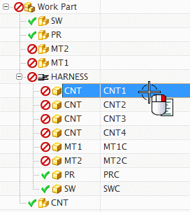
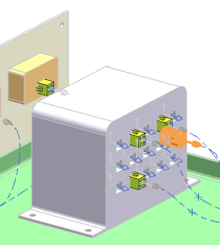
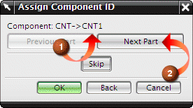
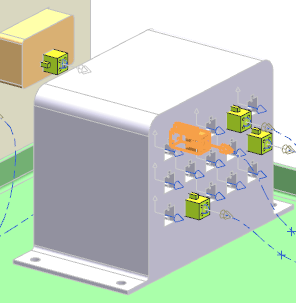
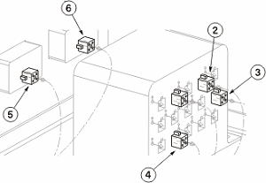

Deselect all of the connectors, then under the HARNESS node, right-click the CNT1 row and choose Manual Assign.

Note the connector currently highlighted in the view.

If you click OK, that component is assigned CNT1 (1). To select the desired component, click Next Part (2) until the desired component is highlighted.

Click Next Part until the connector indicated below is highlighted, then 点击确定。

In the Electrical Component Navigator, a green check mark appears on the CNT1 node indicating that the component is now assigned. If you highlight the CNT1 row inside the Component Navigator, the connector you assigned to it will highlight in the view. You will now proceed to manually assign the remaining 4–pin connectors on the controller.
|
Tip |
If you assign the wrong component to a Device ID, simply repeat the Manual Assign process to reselect the desired component. |
In the Electrical Component Navigator, select the CNT2 row that has a 4–pin connector, then press the Shift key and select the last row that has a 4–pin connector. They are:
CNT2
CNT3
CNT4
MT1C
MT2C
Right-click any highlighted row and choose Manual Assign.
Assign the 4–pin connectors as specified below.
Click Next Part until the connector specified in the dialog box is highlighted in the graphic window, then 点击确定。
Repeat this process until all the 4–pin connectors have been assigned.
|
CNT2 |
= |
2 |

|
Tip |
Instead of choosing Next, you can select the object directly from the view. |
Review your work in the Component Navigator. Highlight each component row and see which connector highlights in the view. Make sure the ID's are correctly assigned.
Notice the two meters have not been assigned. As long as the device connectors are assigned, the wires will still route. If the meters had been assigned manually before their connectors, their connectors could have been done with auto assign, since each device only has one connector.
Click OK when you have finished.